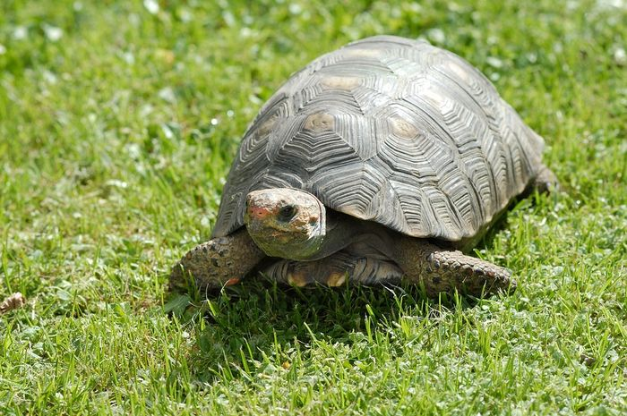

berita tentang hewan (kuala)
KUALA

kuala adalah jenis hewan yang memiliki bulu yang cukup bagus.
berita tentang hewan (kucing)
30 April 2024
KUCING
Kucing adalah hewan yang memiliki bulu yang cukup bagus dan juga memiliki mata yang indah juga seperti kamu
Berita tentang hewan (kura-kura)
30 April 2024
KURA-KURA
Kura-kura memiliki cangkang yang cukup tebal seperti cinta aku sama kamu lohhhh.
Berita tentang hewan (buaya)
30 April 2024

BUAYA
Buaya memiliki bahasa yang cukup unik beda dari hewan yang lain buaya bisa bersuara "aku sayng kamu selalu dan tidak akan meninggalkan kamu.